Installazione Meccanica del Sistema#
Questa sezione descrive i requisiti di montaggio e posizionamento dei componenti chiave del sistema di visione FlexiVision One. L’installazione deve essere eseguita solo dopo aver completato l’installazione meccanica di base del FlexiBowl e dell’eventuale tramoggia.
Warning
Prerequisiti obbligatori
Prima di procedere con l’installazione dei componenti di visione, assicurarsi che:
Il FlexiBowl sia stato montato e fissato alla struttura portante (cellula robotica)
La tramoggia (Hopper) sia stata installata correttamente
La struttura di supporto per camera e illuminatore sia stata preparata
Per l’installazione del FlexiBowl, consultare il Manuale Dedicato fornito.
Note
Competenze richieste
L’installazione meccanica richiede:
Competenze di base in assemblaggio meccanico
Utilizzo di strumenti di misura (calibro, livella, metro)
Capacità di lettura di disegni tecnici
Montaggio VisionController#
Il VisionController (PC Industriale) gestisce l’elaborazione delle immagini e la comunicazione con il robot.
Essendo un componente elettronico sensibile, richiede un posizionamento attento per garantire ventilazione adeguata e protezione da contaminanti.
Specifiche tecniche#

Fori Viti |
M5 |
|---|---|
Caratteristica |
Valore |
Larghezza (totale con staffe) |
245.00 mm |
Larghezza (corpo) |
227.00 mm |
Larghezza pannello connettori |
200.00 mm |
Altezza (totale con staffe) |
123.00 mm |
Altezza (corpo) |
120.00 mm |
Profondità |
61.10 mm |
Requisiti di montaggio#
Requisito |
Specifiche |
|---|---|
Posizione consigliata |
Interno quadro elettrico o su pannello dedicato vicino alla cella robotica |
Spazio di ventilazione |
Minimo 50 mm su tutti i lati per circolazione aria |
Fissaggio |
Guida DIN 35 mm o viti M5 su pannello |
Temperatura ambiente |
1°C ~ +50°C (verificare specifiche complete nella sezione Specifiche VisionController) |
Protezione |
IP40 minimo (consigliato montaggio in quadro elettrico IP54) |
Procedura di installazione#
Montaggio con Fori#
Fase |
Descrizione Operativa |
|---|---|
1. Preparazione supporto |
Praticare i fori secondo le indicazioni riportate nella scheda tecnica |
2. Disimballaggio |
Estrarre il VisionController dalla confezione prestando attenzione a non danneggiare i connettori. Verificare l’integrità del prodotto. |
3. Fissaggio |
Fissare il VisionController con viti M5 |
Montaggio con guida DIN#
Fase |
Descrizione Operativa |
|---|---|
1. Preparazione supporto |
verificare che la guida sia pulita e fissata saldamente. |
2. Disimballaggio |
Estrarre il VisionController dalla confezione prestando attenzione a non danneggiare i connettori. Verificare l’integrità del prodotto. |
3. Fissaggio |
Agganciare il dispositivo facendolo scorrere sulla guida fino allo scatto. |
Warning
Ventilazione
Il VisionController genera calore durante il funzionamento. Garantire sempre almeno 50 mm di spazio libero attorno al dispositivo. Altrimenti si può avere:
Surriscaldamento e spegnimenti automatici
Riduzione delle prestazioni
Danneggiamento dei componenti interni
Montaggio Camera#
Il posizionamento preciso e l’allineamento della telecamera sono passaggi critici che influenzano direttamente l’accuratezza della calibrazione e le prestazioni del sistema di picking.
Distanza di lavoro ottimale#
La telecamera deve essere montata in modo che la faccia frontale della lente sia posizionata a una distanza specifica (Working Distance) dalla superficie del piatto FlexiBowl.
Per il calcolo dettagliato della distanza ottimale per la vostra applicazione, consultare la sezione dedicata: Calcolo Distanza Ottimale
{kind=link}
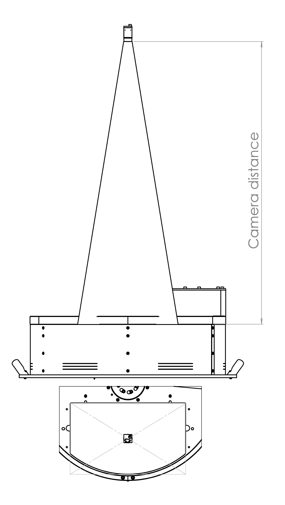
Modello FlexiBowl |
Distanza di Lavoro Raccomandata (Working Distance) |
Lente Inclusa nel Kit (Lunghezza Focale) |
|---|---|---|
FB 200 |
800 mm |
35 mm |
FB 350 |
1000 mm |
35 mm |
FB 500 |
1000 mm |
25 mm |
FB 650 |
1000 mm |
16 mm |
FB 800 |
1000 mm |
16 mm |
FB 1200 |
1300 mm |
12 mm |
Posizionamento e allineamento#
Il corretto allineamento della camera è fondamentale per ottenere immagini di qualità e garantire precisione nel picking.
Configurazioni errate. Le immagini mostrano esempi di posizionamento non corretto della camera: il campo visivo (indicato in rosso) risulta decentrato rispetto all’area di visone, coprendo solo parzialmente l’area di lavoro o includendo zone esterne ad essa. Queste configurazioni compromettono il riconoscimento dei pezzi e il funzionamento del sistema di visione.
{kind=link}
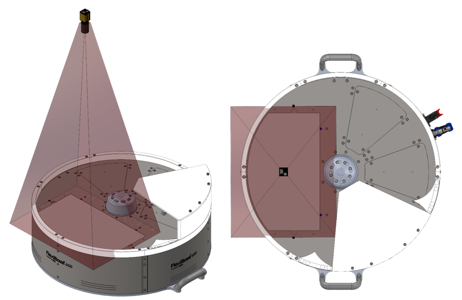
{kind=link}
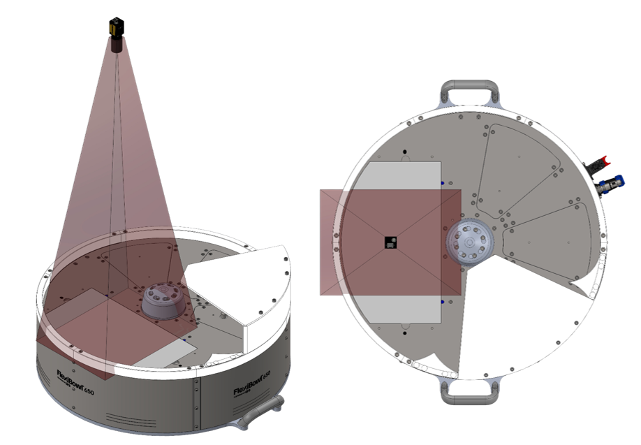
Configurazione corretta. La camera deve essere posizionata centralmente rispetto all’area di visione del FlexiBowl (zona backlight). In questo modo il campo visivo (indicato in verde) copre simmetricamente l’intera area di lavoro, garantendo il corretto funzionamento del sistema di visione.

Centratura: |
|
Ortogonalità: |
|
Tip
Per facilitare la messa a punto e permettere aggiustamenti futuri, si raccomanda fortemente di progettare il supporto meccanico della camera con possibilità di microregolazioni:
Asse Z (altezza): -10 mm / +30 mm (per adattamento distanza di lavoro)
Asse X (sinistra-destra): ±10 mm (per centratura fine)
Asse Y (avanti-indietro): ±10 mm (per centratura fine) Questa flessibilità è particolarmente utile durante la calibrazione iniziale e per eventuali ricalibrazione future.
Dimensioni Camera#
{kind=link}
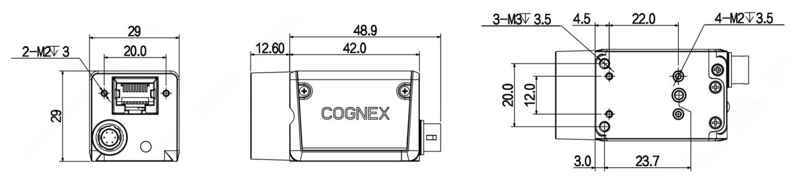
Dimensioni camera CAM-CIC-5000-20G-1 (mm)#
Caratteristica |
Valore |
|---|---|
Larghezza × Altezza (corpo) |
29 × 29 mm |
Profondità (corpo) |
42.0 mm |
Profondità totale (incluso connettore posteriore) |
48.9 mm |
Sporgenza frontale (attacco obiettivo) |
12.60 mm |
Interasse fori di fissaggio laterali (M2) |
20.0 × 23.7 mm |
Fori di fissaggio frontali |
2× M2 profondità 3 mm |
Fori di fissaggio laterali |
4× M2 profondità 3.5 mm + 3× M3 profondità 3.5 mm |
Peso |
88 g |
Warning
Fissaggio:
Utilizzare i 4 fori di montaggio M3 presenti sul corpo camera
Viti consigliate: Viti consigliate: M3 A2 / M3 8.8
Coppia di serraggio: 0.5 Nm (non serrare eccessivamente per evitare deformazioni)
Tip
Regolazione della posizione della camera
Per permettere aggiustamenti futuri ed evitare problemi di allineamento, progettare il supporto meccanico con possibilità di microregolazione su tutti gli assi:
Asse Z (altezza): -10 mm / +30 mm
Asse X (sinistra-destra): ±10 mm
Asse Y (avanti-indietro): ±10 mm
Un supporto con viti serrate definitivamente senza possibilità di regolazione rende impossibile correggere la posizione della camera dopo il montaggio iniziale.
Verifica montaggio lente#
Warning
Prima di procedere con il fissaggio definitivo:
Verificare visivamente che la lente sia installata
Controllare che la lunghezza focale sia corretta per il vostro modello di FlexiBowl (etichetta sulla lente o documentazione dell’ordine)
Assicurarsi che la lente sia avvitata completamente (contatto metal-metal tra lente e corpo camera)
NON rimuovere o allentare la lente se già montata correttamente
Installazione Camera#
Per garantire il corretto funzionamento del sistema di visione è necessario che la telecamera sia installata su un supporto rigido e stabile. Il sistema Flexibowl non genera vibrazioni; tuttavia, nelle linee automatizzate sono presenti altre sorgenti di vibrazione,(robot industriali,sistemi di movimentazione,altre macchine della linea)
Se tali vibrazioni vengono trasmesse alla telecamera, l’immagine acquisita può risultare instabile e le coordinate calcolate dal sistema di visione potrebbero non essere affidabili, compromettendo la precisione del prelievo robotizzato.
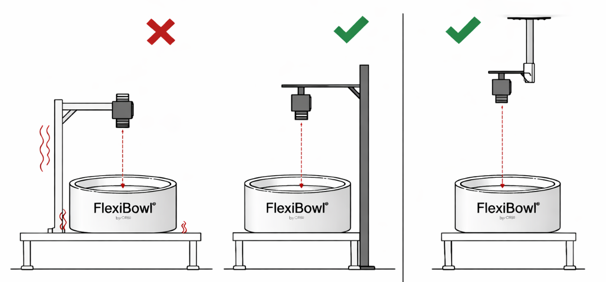
Tip
Per questo motivo si raccomanda di:
installare la telecamera su una struttura rigida e stabile
evitare supporti soggetti a vibrazioni provenienti da robot o altre macchine
utilizzare preferibilmente una struttura indipendente dalla macchina
Warning
Viti di fissaggio camera: prevenzione allentamento
Le viti di fissaggio della camera possono allentarsi nel tempo per le seguenti cause:
Coppia di serraggio eccessiva (> 0.5 Nm): può causare deformazioni del corpo camera e successivo allentamento. Serrare sempre con coppia massima di 0.5 Nm.
Vibrazioni trasmesse dalla linea: utilizzare frenafiletti medio su tutte le viti di fissaggio.
Viti non idonee: verificare l’utilizzo di viti M3 × 8 mm inox come consigliato.
Regolazione della posizione della telecamera:#
Il supporto della telecamera deve consentire la regolazione della posizione per permettere il corretto allineamento con l’area di prelievo del Flexibowl.
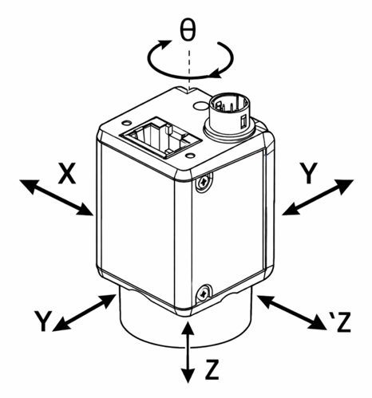
Note
Partendo da un posizionamento nominale con inclinazione, altezza e posizionamento corretto al centro dell’area retroilluminata, si raccomanda di prevedere le seguenti regolazioni:
Regolazione X/Y → ± 50mm Regolazione Z → ± 50mm Rotazione θ → ± 10°
Caution
Camera danneggiata durante il montaggio
Per evitare danni alla telecamera durante le operazioni di installazione e regolazione:
Coppia di serraggio eccessiva: non superare 0.5 Nm di coppia sulle viti M3. Il superamento di questo valore può deformare il corpo ottico in modo irreversibile.
Manipolazione scorretta: maneggiare sempre la camera con cura, evitando pressioni dirette sul corpo ottico e sul sensore.
Urti durante l’installazione: proteggere la camera durante eventuali lavori meccanici circostanti (foratura, fresatura, serraggio strutture).
Montaggio Toplight#
Se l’ordine include un Toplight (illuminatore dall’alto), questo deve essere montato sulla stessa struttura di supporto della telecamera per garantire un’illuminazione uniforme della superficie di lavoro.
Attention
Durante il montaggio, l’apparecchio deve essere spento e staccato dalla corrente.
Dimensioni Toplight#
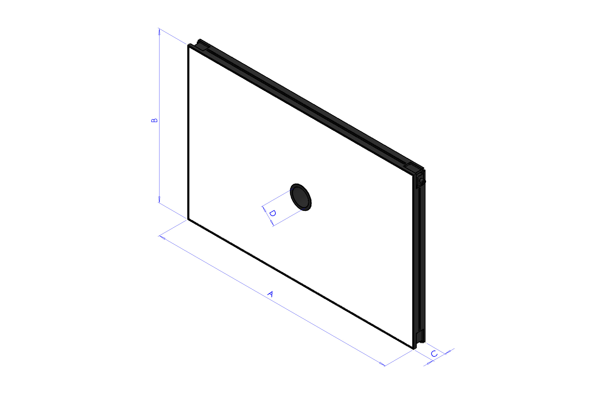
Lunghezza x Larghezza (mm) |
Altezza (mm) |
Altezza con piastra di fissaggio (mm) |
Diametro foro centrale |
Superficie utile massima [A x B] |
Perimetro utile massimo |
|---|---|---|---|---|---|
A x B |
C |
C + 10 mm |
D |
– |
– |
500x300 |
45 |
55 |
65 |
0,15 m² |
1,6 m |
700x300 |
45 |
55 |
65 |
0,21 m² |
2 m |
700x500 |
45 |
55 |
65 |
0,35 m² |
2,4 m |
900x600 |
45 |
55 |
65 |
0,54 m² |
3 m |
Posizionamento Toplight#
Il toplight deve essere posizionato centralmente rispetto alla superficie utile del pannello luminoso,
con l’ottica della telecamera montata all’interno del foro centrale, a filo con la superficie superiore del toplight.
Le frecce rosse indicano le viti di fissaggio delle ghiere dell’obiettivo, una per la regolazione del fuoco e una per la regolazione del diaframma. Come mostrato nella figura, il toplight deve essere montato in modo che le due viti restino accessibili dall’alto.

Il campo visivo della telecamera e il fascio luminoso del toplight (in verde) devono essere allineati concentricamente e perpendicolarmente rispetto all’area di visione sul FlexiBowl.
Come mostrato nelle tre viste (frontale, dall’alto e assonometrica), il toplight deve illuminare esattamente l’area inquadrata dalla telecamera, con entrambi i componenti centrati sull’asse ottico verticale del sistema.
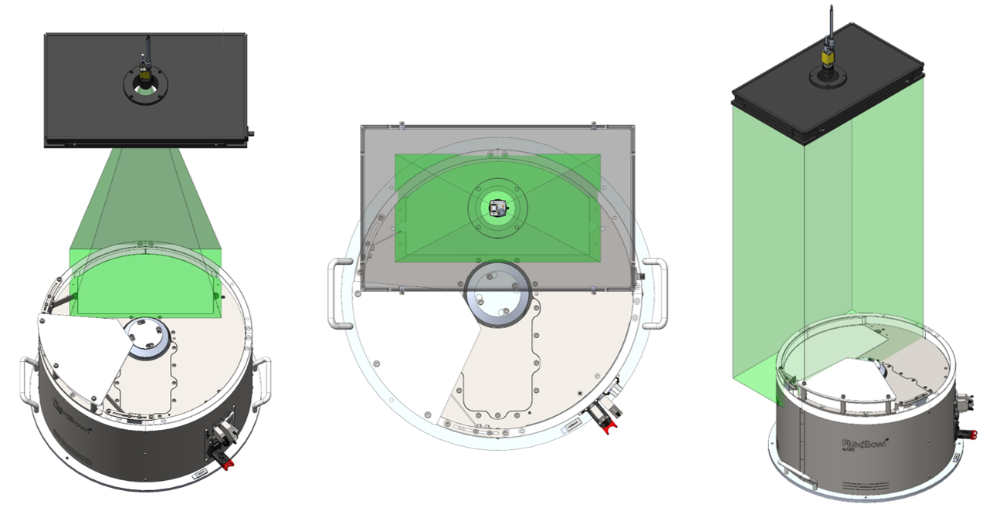
Un posizionamento errato si verifica quando il toplight e la telecamera non sono centrati sull’area di visione del FlexiBowl.
Come illustrato (in rosso), due errori tipici sono:
spostarsi in avanti o indietro rispetto all’area di visione.
ruotare il toplight rispetto ad essa.
In entrambi i casi, l’illuminazione risulta disassata e non perpendicolare, compromettendo la qualità dell’acquisizione.

Procedura di installazione#
Fase |
Istruzioni operative |
|---|---|
1. Posizionamento |
Fissare il Toplight sulla struttura di supporto in posizione concentrica rispetto alla camera. |
2. Distanza dalla superficie |
Posizionare l’illuminatore a una distanza dalla superficie del FlexiBowl simile a quella della camera per:
|
3. Orientamento |
Assicurarsi che la superficie emittente del Toplight sia parallela al piatto del FlexiBowl. |
4. Angolo di illuminazione |
Perpendicolare alla superficie (0° tilt). |
5. Fissaggio |
Secondo specifiche della modalità scelta (vedi sezione seguente). |
Modalità di fissaggio#
Il Toplight può essere fissato in due modalità: sull’angolo o sul lato.
Note
I componenti di fissaggio non sono inclusi nella fornitura del Toplight. Il montaggio può quindi essere personalizzato in base alle esigenze dell’installazione.
Fissaggio sul lato (scanalatura): dadi M4 forniti
Fissaggio sull’angolo: viti CHC M4x20 non fornite
In entrambi i casi si raccomanda l’uso di un frenafiletti (non fornito) per evitare allentamenti nel tempo. La coppia di serraggio consigliata è compresa tra 0,5 e 1,5 Nm.
1. Fissaggio sull’angolo#
Il fissaggio sull’angolo utilizza viti CHC M4x20 (non fornite) applicate nei fori posizionati ai quattro angoli del Toplight.

Fissaggio sull’angolo tramite vite CHC M4x20 (non fornita).#
2. Fissaggio sul lato (scanalatura)#
Il fissaggio sul lato utilizza 4 dadi M4 (forniti) da inserire nella scanalatura laterale del profilo del Toplight. La profondità massima di inserimento del dado nella scanalatura è di 5 mm.
{kind=link}
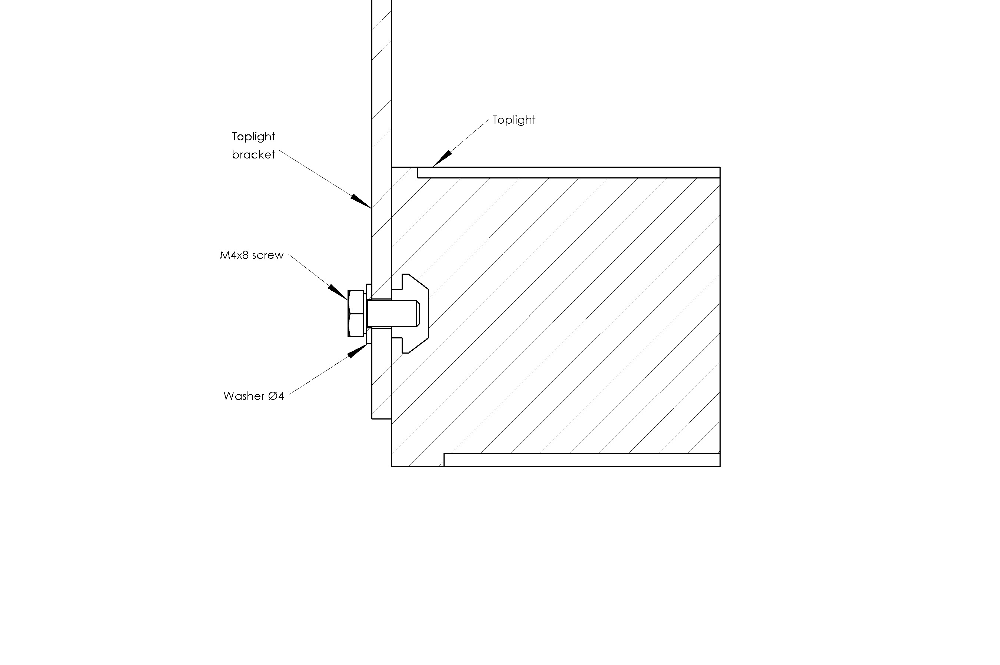
Fissaggio sul lato tramite 4 dadi M4 (forniti) inseriti nella scanalatura del profilo. Profondità massima: 5 mm.#
Fissaggio laterale con staffe#
Nel caso in cui il Toplight venisse fissato con delle staffe:
Error
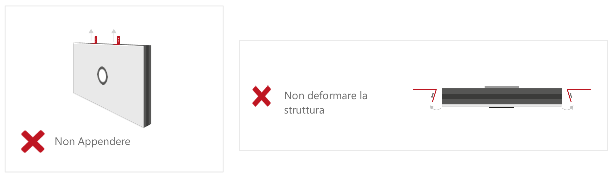
Tip
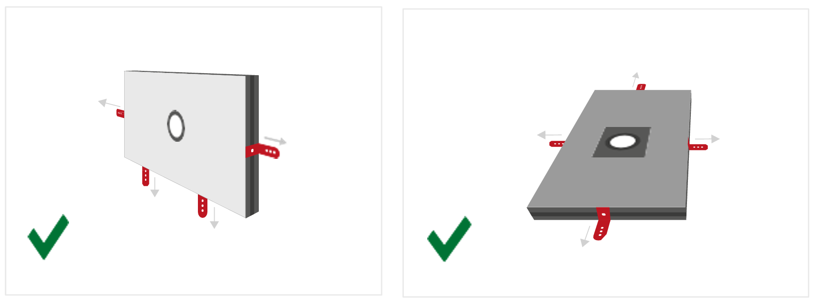
Cablaggio illuminatore#

Parametro |
Requisito / Azione |
|---|---|
Tensione |
24V DC (±10%). Tensione minima di funzionamento: 20V DC sull’ingresso luce. |
Connettore |
M12 5 poli (T-coding). |
Pinout connettore |
Pin 1: +24V (marrone) — Pin 3: GND (blu) — Pin 4: STROBE PNP (nero) |
Modalità STROBE (PNP) |
Da 5V a 24V per accensione al 100%. Da 0V a 1V per spegnimento al 100%. |
Modalità CONTINUA |
Pin 1 (+24V) e Pin 3 (GND) collegati; Pin 4 (PNP) collegato a Pin 1. |
Caduta di tensione (cavo M12, 10m) |
1.15V @ 5A — 2.3V @ 10A — 3.5V @ 15A — 4.6V @ 20A (max 20A) |
Schermatura |
Utilizzare cavi schermati per ridurre le interferenze elettromagnetiche (EMI). |
Warning
Sicurezza elettrica
Rispettare le tensioni di alimentazione e i morsetti di connessione indicati.
Non modificare né smontare il prodotto.
Non collegare o pulire l’apparecchio quando è sotto tensione.
Non guardare direttamente la sorgente luminosa.
Note
Per dettagli sui collegamenti elettrici, consultare la sezione Cablaggio e Connessioni.
Schermatura da luce ambientale#
La stabilità del sistema di visione dipende fortemente dalla consistenza delle condizioni di illuminazione. La luce ambientale variabile può causare rilevazioni incoerenti.
Warning
Protezione da fonti luminose esterne
Si raccomanda fortemente di schermare la cella robotica da:
Luce solare diretta o indiretta
Illuminazione artificiale variabile (es. lampade con dimmer)
Riflessi da superfici lucide circostanti
Flash o luci intermittenti nell’area
Riferimenti correlati#
Per informazioni complementari all’installazione meccanica:
Calcolo della distanza ottimale camera: Calcolo Distanza Ottimale
Specifiche tecniche complete: Specifiche FlexiVision One
Passo successivo - Collegamenti elettrici: Cablaggio e Connessioni
Calibrazione camera: Calibrazione della Camera